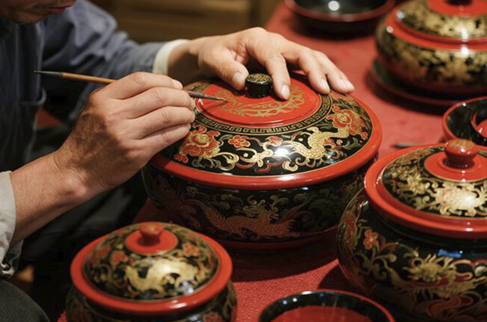
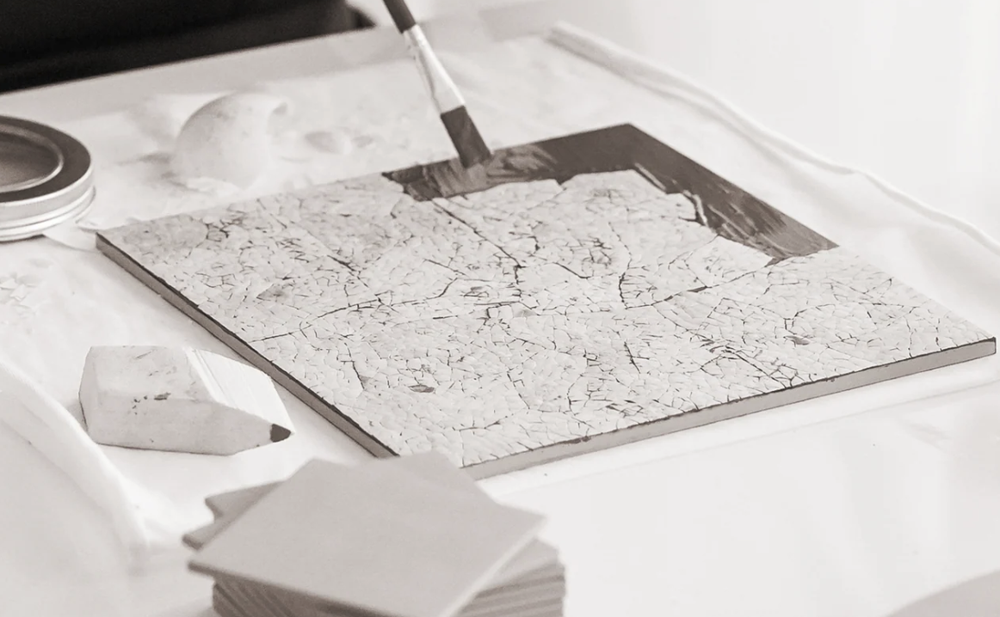
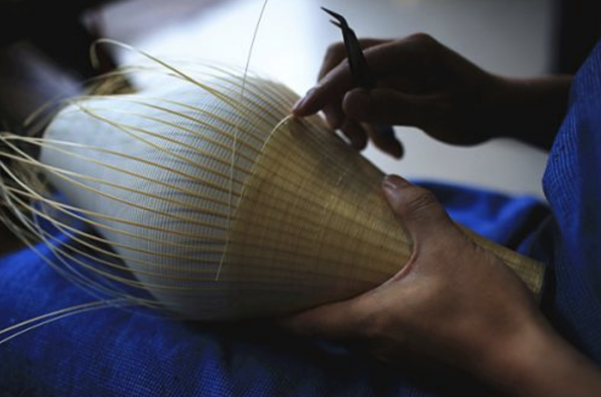

Traditional Chinese Lacquer Art
Discover the beauty of natural lacquer, built through layers of traditional craftsmanship.
Learn MoreA living culture, waiting to be discovered
Explore the stories, skills, and traditions that make China's intangible cultural heritage unique, and discover the people keeping them alive.
Explore Heritage →Featured traditions
Meet some of the traditions passed down through generations.

Discover the beauty of natural lacquer, built through layers of traditional craftsmanship.
Learn More
Explore delicate bamboo filaments arranged into intricate decorative patterns.
Learn More
See how fine bamboo strands meet porcelain in a distinctive traditional craft.
Learn MoreExplore by region
Every region holds traditions shaped by its history, landscape, and community. Choose a region to begin your journey.

EXPLORE BY REGION
Click on a region to explore local crafts, performances, and customs, and learn the stories behind them.
Your journey begins here
Explore the rich traditions of China through three simple steps.
Choose a region and discover traditions rooted in its local culture.
Read the stories behind traditional crafts, performances, and customs.
Understand why these traditions matter and how communities keep them alive.
Every tradition carries a story. Start exploring and help keep these cultural treasures alive for future generations.
Discover Our Heritage